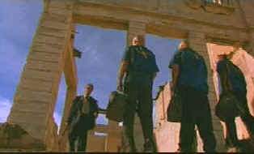

| Six-String Samurai/B.B |
| Palm/1998/91M/WS
1.85 |
It's
outrageous, inventive, often very entertaining, but Six-String Samurai is really not much more than an extended
music video. To it's credit, it doesn't wear thin and retains vitality all the way on the road to Lost Vegas.
In this derivative vision of a post
apocalyptic world, Lost Vegas (sic) in the center of the
universe. In Vegas, a new "king" is about to be
crowned in a "string out" guitar competition. It's a
long road to Vegas, but Buddy, the guitar picking sword swinging
samurai of the title is determined to cut a swath through the
desert with all the cool of Toshiro Mifune, Mel Gibson and Clint
Eastwood rolled into his gaunt frame. Buddy, who can't resist
playing hero, saves a The Kid along the road, and then, Kid
sticks with Buddy like gum on a shoe. Buddy deals with the Kid
and the villains with varying degrees of success.
 |
|
Buddy
takes on the bowlers in one of many confrontations
on the road to Lost Vegas. ©Palm |
The allusions
to classic cinema are not subtle. My God, there's even a midget
incanting Follow the Yellow Brick Road. I love the fact that Lost
Vegas looks just like the Emerald City a lot more than the
midget's advice. Then there the questions of several vehicles
and the look of these survivors of the doomsday bomb. Do you
think the creative talents here had a look or two at the Max Mad
films. Did I detect some Abbey Road compositions? Is Buddy
a man with no name? With Star Wars references and sit-com stabs,
Six-String Samurai moves on and on to Lost Vegas.
Director Lance Mungia does a good job
of making Six-String Samurai a non stop sword fest. The script,
by Mungia and star Jeffrey Falcon, leaves little room for
anything but action, but comic tone is often silly enough to
conjure up smiles. The desert
compositions of cinematographer Kristian Bernier are quite fabulous. I would mind an apocalyptic book
of stills from Six-String Samurai. And the music is
a rollicking upbeat accompaniment to the carnage.
Some aspects of
the look of Six- String Samurai I just don't get. In the opening
sequence, director Mungia opts for some twisted camera optical
effects, compressing the image almost like an anamorphic
transfer. I admit, I was confused enough to try changing the
aspect ratio on my set-up. What was the point? I didn't get it
and it only distracted me from the hyper sword play and
inventive leaps of Buddy, the guitar toting samurai sword master
making his way to compete for the throne of Lost Vegas. The
carnage on the road to Lost Vegas serves as a metaphor for all
those lost careers trying to make it to the big time.
Jeffrey
Falcon is pretty cool as Buddy. This guy must be trained as a
dancer. Or a high hurdler at least. His moves, emphasized in
quick cuts or slow motion photography, are the hypnotic force on
which Six-String Samurai gracefully pivots. Falcon
manages to define his own unique brand of desert élan despite
the overused cinema allusions. Young Justin McGuire,
playing The Kid
is simply out of his league. Lacking charm or precocity,
McGuire's lack of screen presence is constantly baffling.
The DVD
looks pretty good in most scenes, with only a few segments
suffering from slightly soft focus. Desert colors are appropriately
warm and the sandy compositions are not too grainy. Few NTSC
artifacts disturb the cool of the samurai and his blade cuts the
screen with no digital break-up. The Dolby Digital 5:1
surround is alive with the swoosh of the "Four-Eyes" samurai's
blade. Two music videos are included in the package as well as
the theatrical trailer.
|
|

The
Feature
Archive has articles ranging from
Akira
Kurosawa to Blonde
Bimbos and John
Ford.

Fred Astaire and Cyd
Charisse
bring Silk Stockings to life, a remake of Ninotchka,
one of many films successfully turned into musicals by the Hollywood
dream factory. Read all about remakes into musicals by clicking on
the divine dancers.

 Gary
Morris's insightful publication Bright Lights Film Journal
turns the celluloid in films from a unique perspective. Click on the image above for more pure movie views. Gary
Morris's insightful publication Bright Lights Film Journal
turns the celluloid in films from a unique perspective. Click on the image above for more pure movie views.
 A
love of movies drives this small DVD production company, Synapse
Films. Currently specializing in horror and cult films.
Watch for new DVD releases of film festival independents as Synapse
branches out. A
love of movies drives this small DVD production company, Synapse
Films. Currently specializing in horror and cult films.
Watch for new DVD releases of film festival independents as Synapse
branches out.

Looking
for a fix of irreverent flick
dissection. Check out The
Big Combo where four guys rave
and rant about movies.
 Direct
from the corridors of the Home
Theater Forum, Home Theater Talk is
the newest place on the Net to
discuss everything home theater.
Friendly atmosphere and
knowledgeable folks are the secret
ingredients. Direct
from the corridors of the Home
Theater Forum, Home Theater Talk is
the newest place on the Net to
discuss everything home theater.
Friendly atmosphere and
knowledgeable folks are the secret
ingredients.

Specializing in DVD reviews, DVD Authority boasts
almost 400 reviews in an easy to use, elegant,
interface.

The
Movie Poster Archive include extensive poster images from the
films of stars like Susan Hayward, Kirk Douglas, Katharine
Hepburn and many more. This month's featured star is
Susan Hayward
|